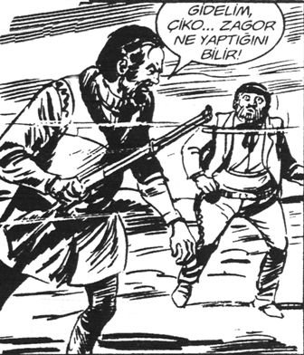

Hıdır APK Dairesi’ndeki masasına yerleştikten sonra üç gün boyunca ne arayan ne de iş veren oldu. Dört masanın ortak tek telefonu vardı. O da dış hatta kapalıydı.
İşin ilginç tarafı, diğer masalarda çalışan kimse yoktu.
Elinde dosyalarla gelmişti. İlk şoku atlattıktan sonra, APK’da çalışma fikri sıcak gelmişti. Bunca yıllık deneyimini araştırmaya, planlamaya ve koordinasyona ayırmak belki kariyerini etkileyebilirdi.
Bakanlıkta yürüyen işlerin hepsi aksaktı. 5 kişinin yapacağı işi 50 kişi yapıyordu! “Oturayım, geniş ve iyi bir rapor hazırlayayım da bakanlığa sunayım” diye düşündü.
Ferrari’sini Satan Bilge’de olduğu gibi.
Kararı ver; Doğu felsefesiyle, Amerikan iş bitiriciliğini birleştir. Sonra gelsin başarı ve mutluluk. Ne kadar kolaydı.
APK aslında özel sektör şirketlerinin en önemli birimi Ar-Ge’ye karşılık geliyordu. Bugüne kadar âtıl kalması bundan sonra kalacağı anlamına gelmiyordu.
Ne diyordu okuduğu kişisel gelişim kitabının ABD’li yazarı:
“Eğer birisi yapabiliyorsa sen de yapabilirsin!”
“Bu APK’dan şef döneceğim, hepiniz göreceksiniz!”
Bunu ayağa kalkarak, ileri dik bakarak ve sesini diyaframdan vererek söylemişti. Sağ elinin şehadet parmağını da ileri uzatmıştı.
Son dönemde “Ferrari” kitabıyla birlikte birçok Amerikalı’nın ve Amerikan vatandaşı olmak için can verecek birçok Türk’ün “kişisel gelişim” kitaplarını okumuştu.
Hepsi ona başarının yolunu öğretmişlerdi. Birisinde bedenini doğru kontrol eder ve zihnini doğru programlarsa, başarının geleceğini anlatıyordu.
Güçlü olmanın yollarından biri, sesi de doğru kullanmaktı. Artık başkalarının beden dilini de çözebiliyor, kendisi de mesajlarını daha güçlü veriyordu.
Hem “kişisel gelişim” okuyor hem de raporunu bu odada hazırlıyordu.
Aslında çaycı İğdeli İsmail’den APK’nın bir sürgün yeri olduğunu, elliye yakın memur ve yöneticinin APK’ya hiç gelmeden ay başlarında maaşlarını aldıklarını duymuştu. “Türkiye’de böyle 5000’e yakın insan var abi, işe gelmeden maaş alıyorlar. Sen de gelme! Milletin enayisi misin?” demişti.
Aklına bir anda yeni okuduğu Kendinizi Motive Etmenin 1001 Yolu geldi. Sandra Kim yazmıştı. Kore asıllı bu kadın “Evim” dediği Amerika’da çok başarılı olmuştu. “Başarı”...
Kelime gözünün önünde canlandı. Ne diyordu Kim?
Kim ne diyordu?
“Kendi kendinizin amigosu olun. Zor bir iş bitirdiğinizde heyecanlanın, zıplayın, şarkı söyleyin. Kendinizi aptal gibi hissetseniz bile kesinlikle yorgun, bıkkın ve stres altında hissetmezsiniz.”
Hıdır Azgören, daha bir dik durdu. Kitaptan öğrendiği gibi nefesi diyaframa aldı. Kitapta okuduğunun aynısını yaptı zıplayarak, başını geriye atıp höykürdü.
“Göreceksiniz başaracağım. Başarımın önünde kimse duramayacak.”
Arkasındaki aralık kapıdan çaycı İsmail’in sesi duyuldu. “Kahpe İstanbul benim olacaksınn!..” İsmail’in kıkırdamaları ve memurların gülüşmeleri koridoru kaplarken Hıdır koltuğuna çöktü ve fısırdadı.
“Hasss...r”
“Evet öyle. Bu geceden itibaren yaşamının kontrolünü tamamıyla ele geçir. Bir kez ve sonsuza kadar kaderinin efendisi olmaya karar ver. Kendi yarışında koş. İçinden gelen çağrıyı keşfet; o zaman esin dolu bir yaşamın mutluluğunu sürebilirsin. Son olarak, arkanda ve önünde olanların, içinde olanlar yanında hiçbir öneminin olmadığını her zaman hatırla.”
“Sağ ol Julian. Bunu duymaya ihtiyacım vardı. Yaşamımda neyin eksik olduğunu bu geceye kadar fark edememişim. Gerçek bir hedeften yoksun bir şekilde, amaçsızca vakit geçiriyormuşum. Her şey değişecek. Sana söz veriyorum. Bunun için sana minnettarım.”
“Rica ederim dostum. Ben sadece amacımı gerçekleştiriyorum.” [7]
